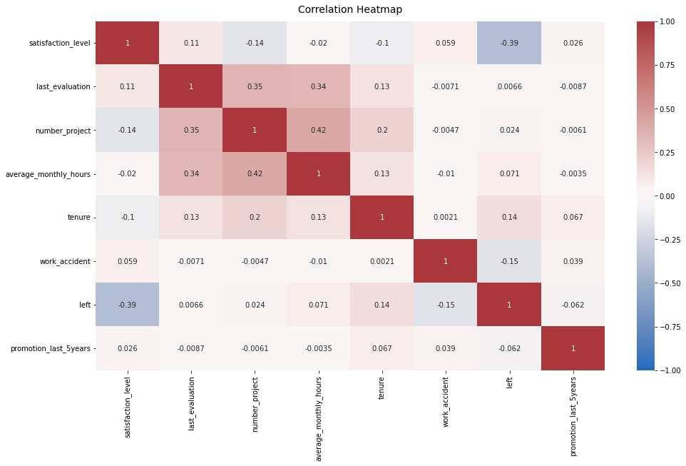
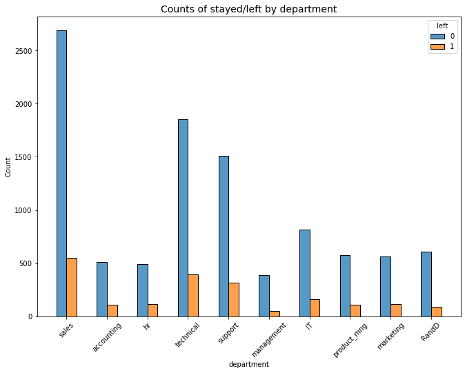
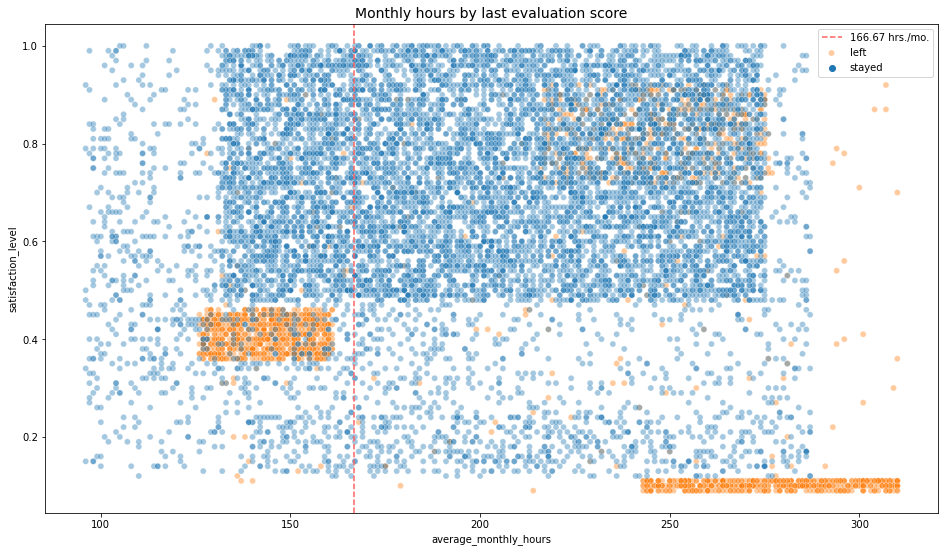
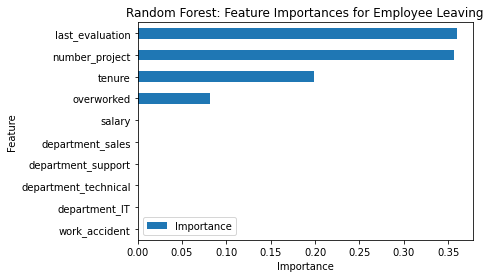
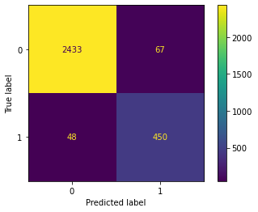

Understand turnover
Explore workload, projects, tenure, evaluation, salary and department patterns associated with employees leaving.
Analyzing employee turnover patterns and building a machine-learning workflow to identify predictive signals for retention-focused HR investigation.
What patterns are associated with employee turnover, and which variables are most useful for identifying higher-risk cases?
Explore workload, projects, tenure, evaluation, salary and department patterns associated with employees leaving.
Use logistic regression to establish an interpretable reference point before moving to tree-based models.
Engineer a compact workload signal and evaluate a Random Forest on the saved holdout data.
A complete path from data quality to model interpretation and business recommendations.
The source contains 14,999 records and 10 variables. No missing values were found, while 3,008 duplicate rows were identified and removed before the main analysis.
Visual evidence used to understand the structure of turnover before modeling.

Relationships among the main numerical variables used during exploratory analysis.

Counts of employees who stayed versus left across departments.

Monthly hours plotted against last evaluation score, with turnover status shown in the analysis.
The logistic regression baseline was substantially less effective at identifying employees who left. The feature-engineered Random Forest produced the stronger saved holdout result.
For a retention-screening workflow, missing employees who later leave can be costly. The model therefore provides a useful signal for prioritizing human follow-up, while the final operating threshold would need to be defined from the real business costs of false positives and false negatives.
The saved feature-importance analysis highlights the variables the Random Forest relied on most heavily.

Last evaluation, project load, tenure and the engineered workload indicator are among the strongest predictive signals.

Final saved holdout classification results for the feature-engineered Random Forest.
The model identifies areas worth investigating, not automatic explanations for why an employee leaves.
Review project allocation and long working hours for employees carrying heavier workloads.
Examine promotion and career-development patterns alongside tenure.
Investigate employees with strong evaluation scores who also work very long hours.
Use model outputs to prioritize follow-up rather than automate employment decisions.
The results are useful as a case study, but several constraints matter before any real deployment.
Educational dataset rather than a real workforce. Fresh, representative data is needed for validation.
The notebook reused a holdout workflow across iterative modeling rounds, so the reported metrics are not an independent production estimate.
A production threshold should be chosen from the actual business costs of false positives and false negatives.
Explore the technical work, business summary, and freelancing-focused proposal.
Full Jupyter Notebook covering data quality, EDA, feature engineering, modeling and interpretation.
View NotebookA concise business-facing summary of the problem, methodology, results and limitations.
Open SummaryA freelancing-focused proposal showing how the case study translates into client work.
Open Proposal